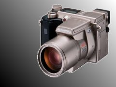

掉有形之物還是掉無形之物讓人覺得糟呢？突然我想到這個對照， 因為著前天算是掉了可能的回憶，昨天算是掉了很多錢。
結論是：只要是自己覺得很重要的東西，感覺就會很糟。
反制之道是：把那東西想成不重要就好了。（這好像是我以往的解決方法）
晚上突然在一堆數位相機的資料中翻找著。剛好想到淺景深的拍攝， 就像以前拍單眼時的照片一樣，就直在資料中翻找。喔我的天， 單眼數位是台幣二十萬起跳。 
反過來我換個方向，找焦距長的相機。這樣的相機Olympus 有出， 叫C-2100 ULTRA ZOOM（如右），鏡頭很長，日幣價查到在秋葉原賣75500， 我算一算台幣可能會賣到快五萬。當然，如果是以跑單幫帶回來的價來算， 只要台幣20820 元。
很OX吧，像我學校那台Nikon Coolpix 800 ，台灣還賣兩萬四， 那是官方網頁上標的價格89000日幣直接換算來的。但是，在網路上查了查， 現在日本才賣46500 甚或35800 日幣，換算後是台幣一萬兩千八或一萬零六百元!! @_@ 好黑....
第三個方案，在原有的相機接轉接環加上放大望遠， 這邊有Nikon 原廠出的2x鏡還有數位視野上很熱門的kenko 8x兩個選擇， 價格都約在4000左右。
突然好想要，但我是窮人。4000約可買兩張32M 的CF卡，如果記憶卡充足， 我可以在大活動上開高解析來拍。不過，這有個缺點，那就是連拍速度會降低很多。 如果是加望遠，必得用腳架來穩定，且不能太近拍， 也一樣無法滿足活動中需要的機動性。